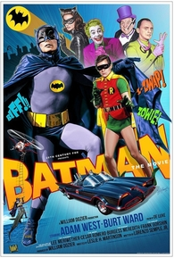
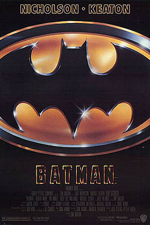
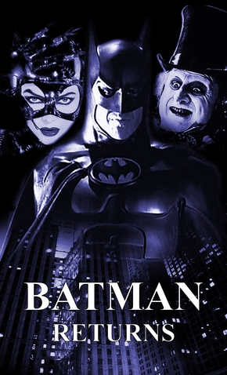
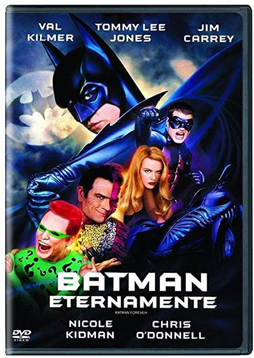
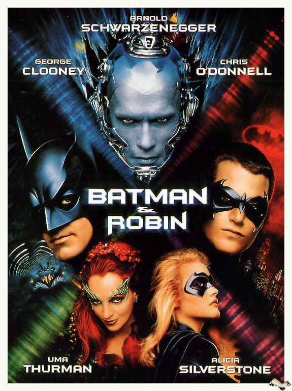
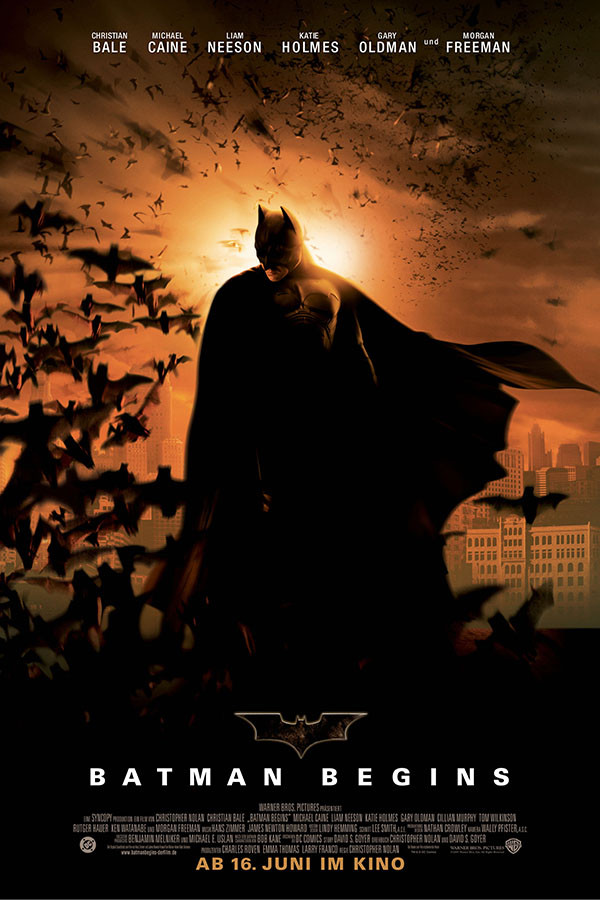
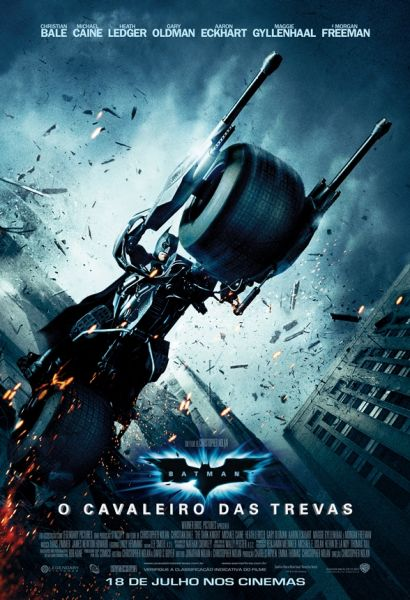
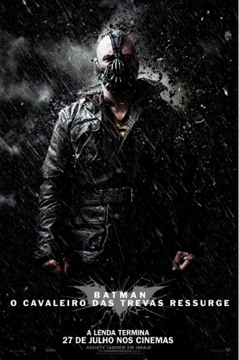
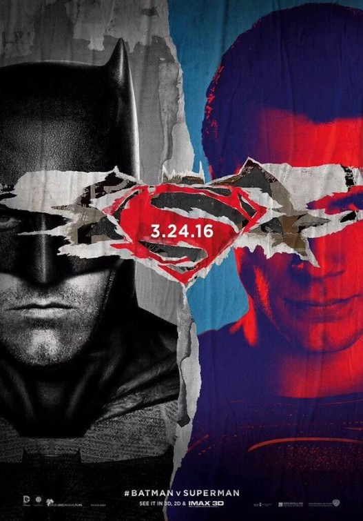
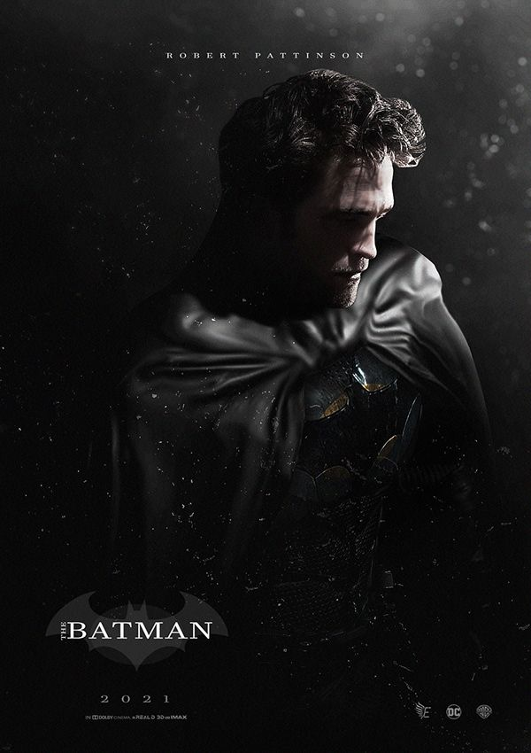

Até o momento, o Homem-Morcego já teve 10 filmes live-action focados em sua história, integrou o elenco de outras 3 grandes produções DC. Provavelmente um dos personagens que mais teve diferentes intérpretes, o herói teve sua história reiniciada em diferentes séries de filmes, o que faz com que não exista exatamente uma ordem cronológica para assistir às produções.
Assisti-los na ordem em que foram lançados, porém, pode ser interessante para entender a trajetória do Homem-Morcego durante o desenvolvimento do cinema.
1. Batman: o filme (1966)
Em 1966, chegava aos cinemas o primeiro filme do Batman. Adam West e Burt Ward imortalizaram suas atuações no papéis do Homem-Morcego e do Robin, respectivamente. Outro grande destaque ficou para o trabalho de Cesar Romero, como um dos Coringas que entrariam para a história do cinema. A trama do longa acompanha a dupla de heróis tentando salvar o Comodoro Schmidlapp, que corre perigo a bordo de um iate. Eles chegam ao barco usando o Batcóptero, mas descobrem que tudo não passou de uma emboscada arquitetada por quatro dos principais inimigos do Batman.
2. Batman (1989)
Apenas 23 anos depois de seu primeiro filme, o Homem-Morcego retornaria aos cinemas. Primeira produção que pertenceu a um universo cinematográfico, Batman contou com a marcante direção de Tim Burton e trouxe Michael Keaton no papel principal. Com Jack Nicholson fazendo história com sua interpretação do vilão Coringa, o longa mostrou a transformação do personagem no palhaço do crime. Na trama, o Homem-Morcego precisa impedir o plano do Coringa de envenenar a população de Gotham com um gás que causa risadas histéricas e leva à morte. Mas o vilão guarda ainda outro segredo, que tem relação direta com o herói.
3. Batman: O Retorno (1992)
Contando mais uma vez com Michael Keaton no papel principal e Tim Burton na direção, Batman: O Retorno deu continuidade à história que vimos no longa anterior, mas dessa vez Bruce Wayne precisa enfrentar o perigoso Pinguim. O vilão ganhou vida mais uma vez nos cinemas, dessa vez na interpretação de Danny Devito. Mas o macabro plano do Pinguim de sequestrar e matar os filhos primogênitos dos cidadãos de Gotham não é o único desafio do Homem-Morcego neste filme. Ele ainda precisa tentar impedir a sede de vingança da Mulher-Gato, vivida por Michelle Pfeiffer.
4. Batman Eternamente (1995)
Com a recusa de Michael Keaton e Tim Burton em voltarem para um terceiro filme do Batman, Joel Schumarcher assumiu a direção do novo longa, e Val Kilmer assumiu o papel principal, após muitos atores serem cogitados para o trabalho. O filme também contou com a apresentação de Dick Grayson, o Robin, vivido por Chris O'Donnell.
5. Batman e Robin (1997)
Quarto e último filme da antologia The Batman Motion Picture, Batman e Robin contou com o retorno de Chris O'Donnell para o papel de parceiro do Homem-Morcego, que agora ganhou vida na interpretação de George Cloney. A trama acompanha Batman, Robin e a recém chegada Batgirl combatendo o Senhor Frio, a Hera Venenosa e Bane, que se uniram na tentativa de dominar Gotham.
6. Batman Begins (2005)
Dando início à franquia que elevaria os filmes do Batman a um nível até então nunca alcançado, Batman Begins trouxe Christian Bale brilhando no papel do Homem-Morcego. O longa reiniciou mais uma vez a história do personagem, mostrando novamente a infância de Bruce Wayne, o assassinato de seus pais, o treinamento ao qual foi submetido e seu recrutamento para a Liga das Sombras. Ao retornar a Gotham, Wayne precisa encarar o vilão Espantalho, que usa como arma uma toxina que causa alucinações aterrorizantes em seus oponentes. Com uma abordagem mais política, indo além a motivação de dominação mundial, o primeiro filme da trilogia de Christopher Nolan trouxe um tom sombrio e uma trama mais realística que conquistou os fãs e a crítica.
7. O Cavaleiro das Trevas (2008)
Na trama, o Coringa assume o crime organizado de Gotham e representa um dos maiores desafios que Bruce Wayne já precisou enfrentar. Sádico e violento, ele conta diferentes histórias de origem para sua identidade criminosa, enquanto mutila os rostos de suas vítimas.
8. Batman: O Cavaleiro das Trevas Ressurge (2012)
O terceiro e último filme da franquia de Christopher Nolan trouxe um salto temporal de 8 anos, período durante o qual Bruce Wayne se manteve recluso, após convencer o Comissário Gordon a culpar o Batman pela violência infligida a Harvey Dent. Quando Bane, ex-membro da Liga das Sombras, chega a Gotham para pôr em prática o plano de Ras Al Ghul de destruir a cidade, o Batman já não tem o preparo físico de outrora. O filme ainda trouxe Anne Hathaway no papel de Selina Kyle, a Mulher-Gato.
9. Batman vs Superman: A Origem da Justiça (2016)
Com sua trama se passando 18 meses após os acontecimentos do filme O Homem de Aço, Batman vs Superman: A Origem da Justiça foi a segunda produção do chamado Universo estendido DC, e abordou o mortal conflito entre o Morcego de Gotham e o Superman. Manipulado por Lex Luthor, Bruce Wayne acaba vendo o Superman como uma ameaça à Terra, o que leva os personagens a um embate extremamente perigoso, com o Batman chegando a criar uma armadura movida a kriptonita.
10. The Batman (2022)
O vilão Charada está por trás de uma série de assassinatos misteriosos e está provocando o Batman com seus enigmas. Na tentativa de investigar e impedir que os crimes continuem, Bruce ainda precisa lidar com outros vilões clássicos das HQs do personagem, como Mulher-Gato, Pinguim e Carmine Falcone.